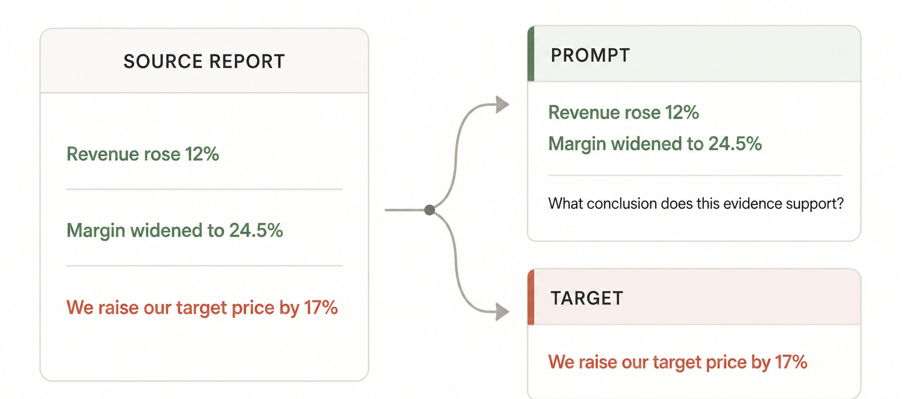

Introduction
Keith and Huy both work in finance, with Keith in equity research. We entered AutoScientist Challenge with a practical goal: train a small model that could actually assist us in our day-to-day work.
As a starting point, we set out to automate one part of the job: reading financial evidence and producing a first draft of an equity-research analysis.
Training a model ourselves would normally require substantial work, compute, and expertise. In this challenge, however, we could focus on preparing the best training data for our finance workflows.
Adaption Labs removed much of the complexity of training and, later, scaling our experiments, which let us concentrate on the finance-specific work we knew best.
Attempt #1: Proof of concept
We started with roughly 1,500 sell-side reports on Southeast Asia’s listed companies, published between 2011 and 2026. The collection included earnings reviews, valuation updates, and target-price revisions written by professional analysts.
The reports contained exactly the kind of analysis we wanted the model to learn, but they were not training examples yet. SFT requires both an instruction and a target response, but we only had the target—the analysis from the report—and no instruction that could have produced it.
Extract data
The next challenge was therefore to reconstruct these missing instructions from the reports themselves.
Several early approaches failed because they generated plausible questions that were not fully supported by the report. In other words, the question sounded reasonable, but the source did not contain enough evidence to produce a valid answer.
We therefore reversed the process. Instead of starting with a question, we started with a real conclusion from the report, removed that conclusion from the evidence, and then wrote a question that could be answered using only the remaining information.
{kind=link}

We then applied five checks — evidential support, answer leakage, entity identity, per-report caps, and deduplication — to remove weak or repetitive examples. This reduced the extracted data to a traceable baseline of 589 examples for training.
Enhance data
Despite being fully traceable, the 589-sample baseline dataset was still too small and narrow for effective fine-tuning. We therefore passed it through Adaptive Data, a platform that automatically expands and reshapes datasets for training.
There were two main changes. First, the dataset became much larger and more diverse. Adaptive Data expanded the original finance examples while also adding broader training data, helping the model learn the target domain without losing too much of its general capability.
Second, the responses became more structured. Dense analyst conclusions were rewritten into clearer outputs that separated forecasts, valuation implications, and limiting evidence while preserving the underlying reasoning.
We raise our target price by 17% as we roll it over to YE2021, factor in a 1.2-ppt decrease in our house cost of equity to 13.0% and lift our aggregate 2020F-2023F NPAT-MI by 2% thanks to wood revenue, partly offset by projected lower capacity utilization for the quartz business.
2020F NPAT-MI is nudged up by 2% due to wood exports. 2021F will see elevated earnings growth backed by robust wood and quartz exports, along with the condo handover. Revenue recognition is adjusted to 75% in 2021 and 25% in 2022. The blended target PER for core businesses is raised to 10.6x.
The evidence does not support a conclusion on the net change to the final target price, as the offsetting effects of delayed revenue versus higher multiples are not quantified in aggregate.
Together, these changes increased the Adaption platform quality score from 5.0 to 9.4, up 88%.

Train model
Once the dataset was ready,
AutoScientist
automatically handled the optimization and hosting of the fine-tuning run, allowing us to
focus on the finance task rather than manually iterating on the training recipe. For
Attempt #1, it trained a rank-16 LoRA adapter on
Llama-3.3-70B-Instruct for two epochs, with loss on completions only.
To test whether the adapter produced more useful research drafts, AutoScientist ran two preference evaluations: one on our dataset and another on Adaption’s separate, in-house Market Analysis evaluation.

The 77-to-23 result is especially useful because it came from an evaluation constructed independently of our dataset. It therefore provides limited evidence that the improvement extended beyond our own distribution.
Attempt #1 showed that a small adapted model could turn company-level evidence into a more useful first draft of equity research. It did not yet show that the model could support the broader market context required in day-to-day finance work.
Limitations
Narrow source coverage. The initial corpus focused on company-level equity research, so the model may understand a company’s fundamentals but miss how interest rates, inflation, policy changes, commodity prices, or sector-wide events affect its outlook. The next stage is to add institutional market research and macroeconomic news so the model can reason across companies and sectors.
Small source-grounded seed. Although Adaptive Data expanded the training set, those variations still began with only 589 independent examples. That seed could not cover enough situations for a robust finance workflow. The next stage is to expand both the number of source reports and the resulting training samples.
Attempt #2: Scale up
Attempt #2 addressed these limitations. We also spoke with Sara Hooker, who emphasized the importance of data scale and reinforced our decision to expand the dataset.
Expand data
Broader source coverage
We therefore expanded the source corpus from roughly 1,500 to about 7,000
institutional reports. The expanded corpus added macro outlooks, sector studies, fund
reviews, and fixed-income commentary. After testing three Adaptive Data recipes, we selected
Dataset 2, the prompt-and-completion variant, and combined it with the
market_analysis_XXL dataset from Attempt #1.
This produced the final public finance dataset: 34,640 samples, more than
50 times the original 589-row baseline.
The final dataset covers individual companies, macroeconomic and market conditions, sector relationships, and cases in which the available evidence is insufficient. This broader coverage moved the training task closer to the finance workflow described in the introduction.
Train model
AutoScientist added 13,856 general-purpose examples to the 34,640 finance samples, producing a 48,496-example mixture before the training split. Of those, 48,127 examples were used for training. The replay data was intended to preserve more of the base model’s general capability while it learned the broader finance domain.
AutoScientist trained a rank-16 LoRA adapter for Llama-3.3-70B-Instruct over
two epochs, using a learning rate of 1e-4. On the final run’s dataset-specific
preference evaluation, the adapted model won 87 to 13. On Adaption’s
separate Market Analysis evaluation, it won 74 to 27.

The latest run is clearly preferred to its base model on both evaluations. These results do not, however, establish that it outperforms Attempt #1 overall: the 87-to-13 and 84-to-16 dataset-specific results come from different distributions, while its 74-to-27 Market Analysis result is close to Attempt #1’s 77-to-23 result. The evidence instead shows that the broader training mixture retained strong Market Analysis performance while producing our highest dataset-specific preference result.
Together, the two attempts moved us closer to the original goal. We first adapted a model to draft company-level equity research, then broadened its training context to include more of the market information encountered in real finance work. What remains is to test whether it can reason reliably across those relationships and make useful predictions about what happens next.
What’s next
Ultimately, a good finance model should accurately predict what happens next.
Finance is relational: a change in one part of the market can propagate across companies, sectors, assets, and geographies. Rather than analyzing each company or macroeconomic factor in isolation, we want the model to produce analysis across these relationships by understanding how changes in one part of the market affect another.
To do that, our next step is to build a point-in-time dataset that captures how companies, sectors, commodities, funds, geographies, and macroeconomic factors are connected at a given moment. This would let the model study second-order effects across markets—for example, how a change in oil prices could affect airlines, inflation, currencies, and related sectors at the same time.
We consider two approaches. FinRipple trains the model itself to reason over changing market relationships, while Point-in-Time Financial RAG keeps the model fixed and instead adapts which historical evidence it retrieves based on market feedback.
We would evaluate both approaches on unseen markets, time periods, industries, and shocks. The proposed dataset, experiments, and evaluation boundaries are described in the complete roadmap.
Acknowledgements
We thank Adaption Labs for hosting the AutoScientist Challenge and for building Adaptive Data and AutoScientist, the tools we used to expand the training data and automate model training in a practical environment. We also thank Sara Hooker for the office-hours advice that reinforced our decision to scale the data, and Ross Giagkoudis for being consistently supportive and helpful in Discord throughout the challenge.
Resources
Attempt #1
-
Dataset
 Hugging Face
Hugging Face
 Kaggle
Kaggle
-
Model
Hugging Face
Kaggle
Attempt #2
-
Final dataset
Hugging Face
Kaggle
-
Model weights
Hugging Face
Adaption Labs
- Adaptive Data Generate & synthesize training data
- AutoScientist Automate LLM training